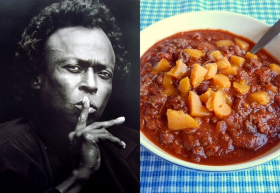

Miles Davis' Chili

Description
Miles Davis, who was born on May 26, 1926, was one of the most important and influential musicians of the 20th century, and changed the course of jazz music more times in his life than some people change their sheets. He was also pretty handy in the kitchen.
In his autobiography, Miles, Davis wrote that in the early 1960s, “I had gotten into cooking. I just loved food and hated going out to restaurants all the time, so I taught myself how to cook by reading books and practicing, just like you do on an instrument. I could cook most of the great French dishes—because I really liked French cooking—and all the black American dishes. But my favorite was a chili dish I called Miles's South Side Chicago Chili Mack. I served it with spaghetti, grated cheese, and oyster crackers."
Ingredients
- 1/4 lb. suet (beef fat)
- 1 large onion
- 1 lb. ground beef
- 1/2 lb. ground veal
- 1/2 lb. ground pork
- salt and pepper
- 2 tsp. garlic powder
- 1 tsp. chili powder
- 1 tsp. cumin seed
- 2 cans kidney beans, drained
- 1 can beef consommé
- 1 drop red wine vinegar
- 3 lb. spaghetti
- parmesan cheese
- oyster crackers
- Heineken beer
Steps
- Melt suet in large heavy pot until liquid fat is about an inch high. Remove solid pieces of suet from pot and discard.
- In same pot, sauté onion.
- Combine meats in bowl; season with salt, pepper, garlic powder, chili powder, and cumin.
- In another bowl, season kidney beans with salt and pepper.
- Add meat to onions; sauté until brown.
- Add kidney beans, consommé, and vinegar; simmer for about an hour, stirring occasionally.
- Add more seasonings to taste, if desired.
- Cook spaghetti according to package directions, and then divide among six plates.
- Spoon meat mixture over each plate of spaghetti.
- Top with Parmesan and serve oyster crackers on the side.
- Open a Heineken.